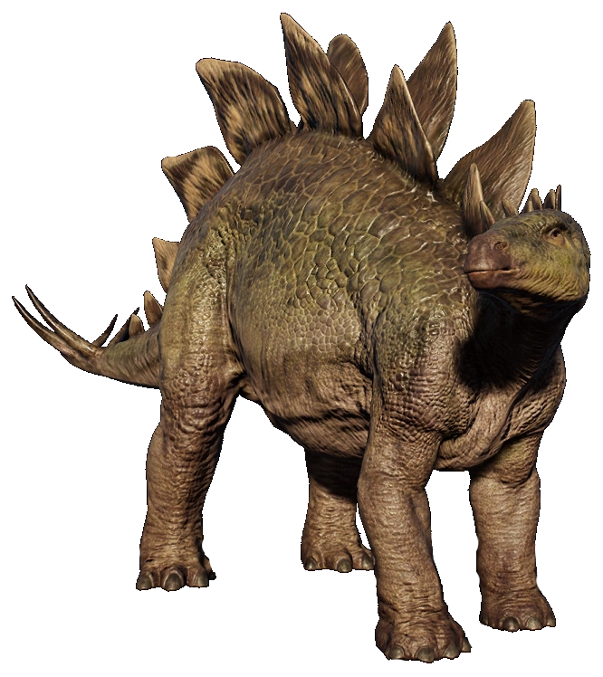
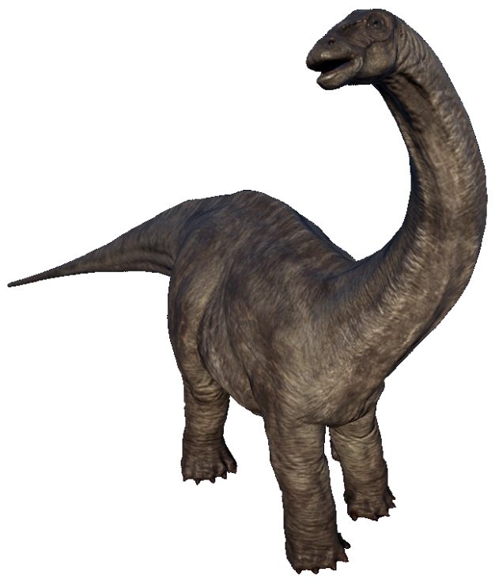
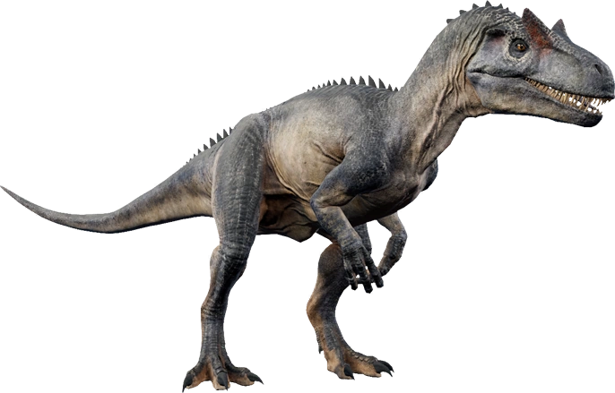
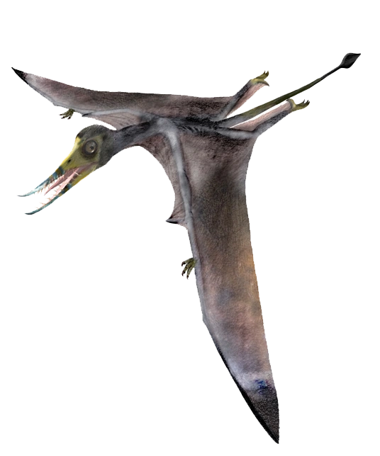

Jurassic Period

Allosaurus
Allosaurus is a genus of large theropod dinosaur that lived during the Late Jurassic period, approximately 155 to 145 million years ago. It was a carnivorous predator that walked on two legs and had a long, narrow skull with sharp teeth, powerful jaws, and binocular vision.
Allosaurus was one of the largest predators of its time, reaching lengths of up to 39 feet (12 meters) and weights of up to 4,000 pounds (1,800 kilograms). It had a strong, muscular body with long arms that ended in sharp claws, which it likely used to catch and hold onto its prey.
One of the distinguishing features of Allosaurus is the row of bony ridges that ran along its back, which likely served as attachment points for powerful back muscles. Allosaurus also had a flexible neck that allowed it to move its head from side to side, which may have helped it to hunt more effectively.
Allosaurus was a highly successful predator, and it likely hunted a variety of prey, including other dinosaurs. Some fossil evidence suggests that Allosaurus may have even hunted in groups, similar to modern-day wolves. Despite its success, however, Allosaurus went extinct at the end of the Jurassic period, along with many other dinosaur species.
- Ornithischians
- ▸ These are herbivorous dinosaurs that walked on two legs or four legs, and had a bird-like hip structure.
- Sauropods
- ▸ These are large, long-necked herbivores that walked on four legs.
- Theropods
- ▸ These are bipedal carnivores that walked on two legs.
- Pterosaurs
- ▸ These are not actually dinosaurs, but they are flying reptiles that lived at the same time as dinosaurs. They have wings made of skin that stretched from their bodies to their elongated fingers.
Examples of dinosaurs during Jurassic period.
| Ornithischians | Sauropods | Theropods | Pterosaurs |
|---|---|---|---|
| Stegosaurus  |
Apatosaurus  |
Allosaurus  |
Rhamphorhynchus  |
| Camptosaurus, Dryosaurus, Heterodontosaurus, Scelidosaurus | Diplodocus, Brachiosaurus, Mamenchisaurus, Camarasaurus | Dilophosaurus, Ceratosaurus, Yangchuanosaurus, Coelophysis | Pterodaustro, Pteranodon, Dimorphodon, Campylognathoides |